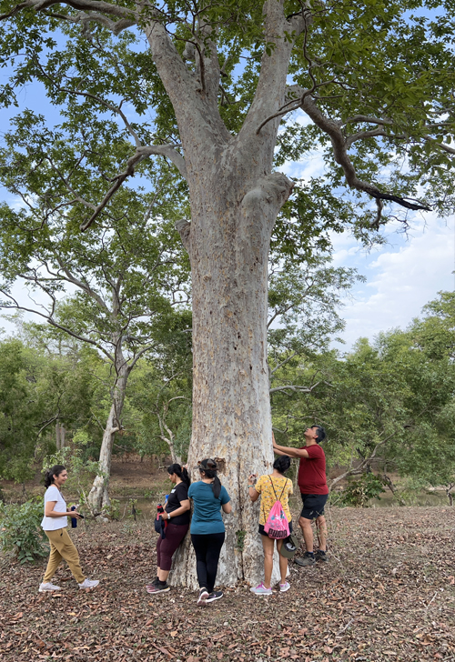
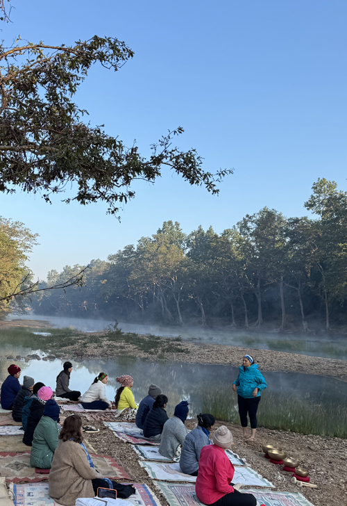
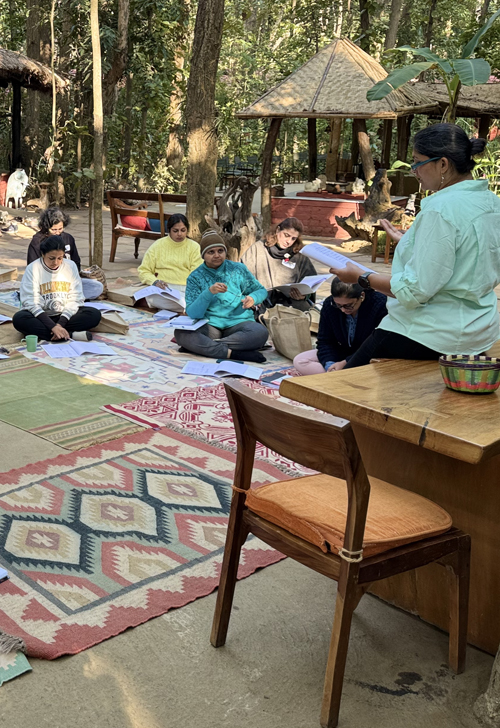
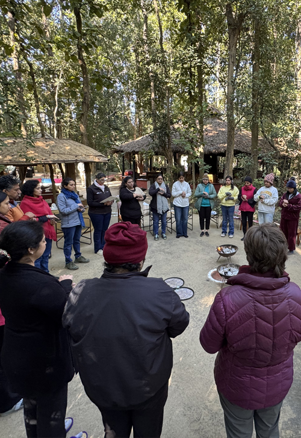

Advanced Telepathic Interspecies Communication with species is an affair of the heart and soul. It involves getting in touch with the deep core of your being so that you can meet another in the same place.




The last 18 years have been heartwarming, especially with the community of animal communicators growing in India. For those who have learnt & honed their telepathic abilities to communicate with the animal kingdom, here is an opportunity to delve deeper into the science and expand their horizons further.
Take a 5-day journey exploring your connection with nature, including trees and landscapes with the same ease as you do with animals.
The ‘Advanced Telepathic Interspecies Communication' workshop is a residential process which aims to take you through an intimate and personal journey with the natural world as a whole.
Workshop Highlights:
- Nature as our guide.
- Telepathic nature and landscape communication.
- Working with elements of nature - balancing the elements within us.
- Building an awareness for ‘morphic resonance’ & remote viewing.
- Working with lost pets/ animals who have left home.
- Exploring the concepts of death and dying in animal communication.
- Group healing sessions.
- Animals as our mirrors.
- Parallel healing practices.
- Identifying your ‘Power Animals’ through Shamanic wisdom, to guide you in your telepathic work.
- Exploring telepathic practices from ancient civilizations and major tribes from across the globe.